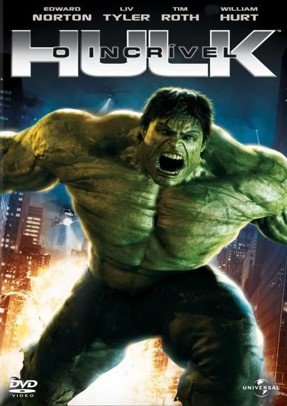
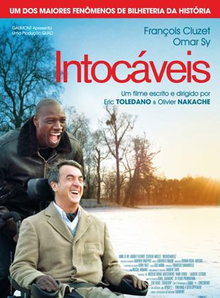
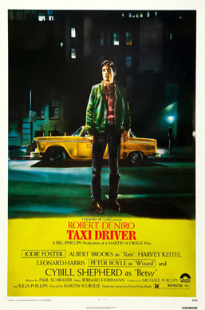

| Mulheres | Filme | Informações | |||||
|---|---|---|---|---|---|---|---|
| Nome | Capa | Trailer | Sinopse | Pontos Fortes | Pontos Fracos | ||
| Ana Maria Santos | Aliens | Ver Trailer | Uma equipe enfrenta uma raça alienígena perigosa. Muita ação e tensão | Suspense e ação incríveis. | Alguns podem achar o enredo repetitivo. | ||
| Beatriz Souza | Hulk |  | Ver Trailer | Um cientista se transforma em uma criatura verde ao se irritar | Ótimos efeitos especiais. | Enredo previsível. | |
| Cláudia Melo | Matrix | |
Ver Trailer | Um hacker descobre uma realidade simulada | Inovador e visualmente impactante | Complexidade que pode confundir | |
| Homens | Filme | Informações | |||||
| Nome | Capa | Trailer | Sinopse | Pontos Fortes | Pontos Fracos | ||
| Bruno Mendonça | Intocáveis |  | Ver Trailer | Uma amizade improvável entre um cuidador e um aristocrata | Emocionante e inspirador. | Pode parecer clichê para alguns. | |
| Daniel Lourenço | Gladiador | Ver Trailer | Um general romano busca vingança | Excelente atuação e cenários | Trama previsível em certos momentos | ||
| Fabiano Motta | Taxi Driver |  | Ver Trailer | Um motorista em Nova York enfrenta uma crise existencial | História profunda e marcante | Temas pesados para alguns espectadores. | |